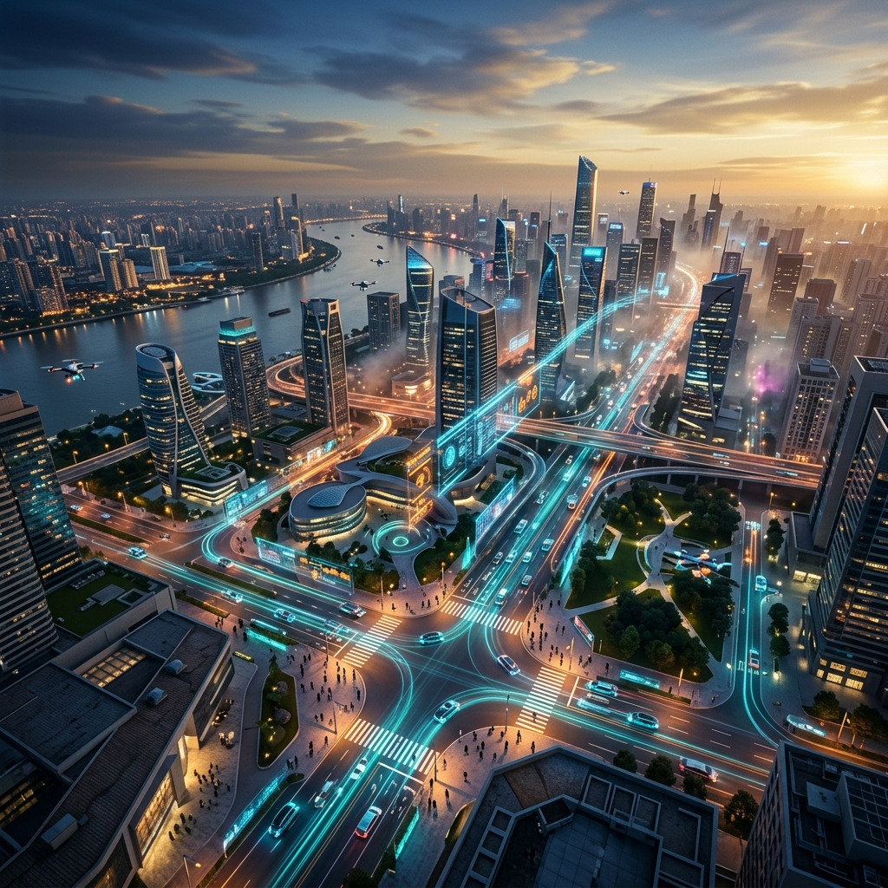
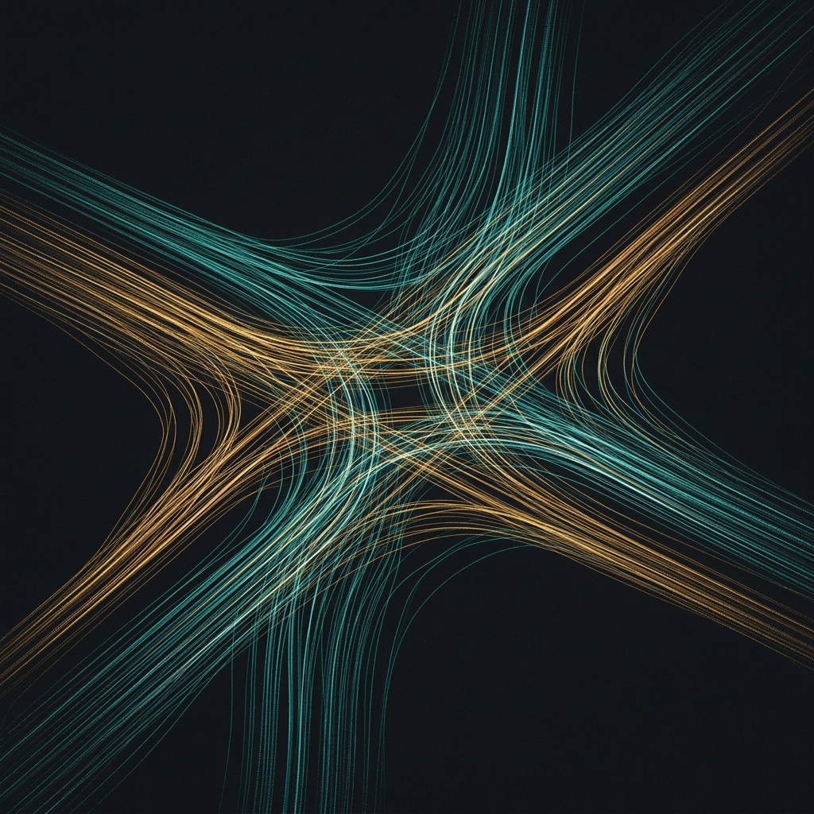

UrbanFlow models the chaos of real-world traffic — every pedestrian decision, every near-miss, every millisecond — so you don't have to guess.
Traditional traffic models are static. They assume perfect conditions and rational actors. But real cities are messy — jaywalkers dart across six lanes, delivery trucks double-park, a single distracted driver cascades into thirty minutes of gridlock.
UrbanFlow is an agent-based simulation engine built in Python that models every individual — vehicle, pedestrian, cyclist — as an autonomous agent with its own decision-making logic. The result? A digital twin that breathes like a real city.
Every pedestrian is an autonomous agent with behavioral states — waiting, crossing, jaywalking, panicking. They react to traffic signals, nearby vehicles, and other pedestrians in real-time. No scripted paths. Pure emergent behavior.

The physics engine doesn't just detect obstacles — it models emergency braking dynamics, tire friction coefficients, and reaction time distributions. Skid marks render dynamically based on actual deceleration forces.
Every agent continuously streams position, velocity, acceleration, and interaction events to an integrated SQLite database. Analyze traffic patterns, near-miss events, and congestion bottlenecks with millisecond granularity.
UrbanFlow is built on Python with Pygame for rendering, SQLite for telemetry storage, and pure math for physics. No heavyweight frameworks. No cloud dependencies. Just code that runs.